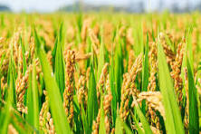

Rice, also known as Paddy, is a staple food crop that is widely cultivated around the world. It is a primary source of nutrition for a significant portion of the global population. The rice plant can grow to over 1 m (3 ft) tall; if in deep water, it can reach a length of 5 m (16 ft). A single plant may have several leafy stems or tillers. The upright stem is jointed with nodes along its length; a long slender leaf arises from each node. Rice, a monocot, is normally grown as an annual plant and irrigated by flooding the fields while, or after, setting the seedlings. Rice cultivation is well-suited to countries and regions with low labor costs and high rainfall, as it is labor-intensive and requires ample water. However, rice can be grown practically anywhere, even on a steep hill or mountain area with the use of water-controlling terrace systems.
The cultivation of rice has a rich cultural history and plays a vital role in the culinary traditions of many societies. Rice is often associated with traditional ceremonies, festivals, and rituals.
Paddy requires specific conditions for optimal growth:
These conditions contribute to the healthy development of rice plants throughout their growth stages. Adequate sunlight ensures the photosynthesis process, while waterlogged conditions in the initial stages support germination and early growth.
Common cultivation practices for paddy include:
Proper land preparation and leveling ensure a suitable environment for seed germination. Flooding or irrigating the fields during growth helps mimic the natural habitat of rice, which is waterlogged conditions.
The choice of soil type has a significant impact on the growth and yield of rice crops. Proper soil management is crucial for maximizing productivity.
Common pests and diseases affecting paddy crops are:
Effective pest and disease management practices are essential for ensuring a healthy rice crop. Integrated pest management and disease-resistant varieties play a crucial role in sustainable rice cultivation.
Rice is typically ready for harvest 100 to 150 days after planting, depending on the variety. Harvesting involves picking mature ears when the grains are fully developed. Proper drying and storage are crucial to prevent mold and preserve quality. Farmers employ various techniques such as drying cribs and silos to store rice for extended periods.
Rice is a versatile crop with a wide range of culinary uses. It is a staple food for more than half of the world's population and serves as the primary source of carbohydrates for many.